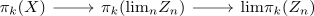
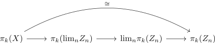
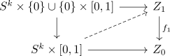

domain weakly homotopy equivalent to sequential limit of Moore-Postnikov stages
Proposition
Let $f: X \rightarrow Y$ be a continuous map
Then
is a weak homotopy equivalence
Proof
Fix $k \geq 0$. Then we want to show that
is an isomorphism:
we get a morphism

We want to show that this map
is an isomorphism.
By limit of a connected diagram with only isomorphisms we may choose sufficiently large $n \in \mathbb{N}$ such that

Hence it suffices to show that
is an isomorphism.
we do it by hand:
By 5.2.15
surjective for $k$
w.l.o.g. we may only consider sufficiently large $n$ - cf. <final / cofinal>
Let $\alpha \in \mathrm{lim} \pi_k(Z_n)$. Then $\alpha = ([\alpha_n])_{n \geq 0}$ such that $f_n \alpha_n \simeq \alpha_{n-1}$.

Then
with
proceed inductively to get $\overline{\alpha_n}$
This induces a map
injective
injectivity for homotopy group as surjectivity of relations
Suppose $\alpha: S^k \rightarrow \mathrm{lim} Z_n$ represents an element in the kerne of $\pi_k(Z) \rightarrow \mathrm{lim} \pi_k(Z_n)$. Then for all $n \geq 0$ the induced map $\alpha_n: S^k \rightarrow Z_n$ is pointed nullhomotopic.
Hence we want to solve the lifting proble
\begin{displaymath}
\begin{tikzcd}
S^k \rar \dar & Z_{n+1} \dar \\
D^{k+1} \rar \arrow[]{dashed}{ru}& Z_n \\
\end{tikzcd}
\end{displaymath}which can be solved for sufficiently large $n$ by